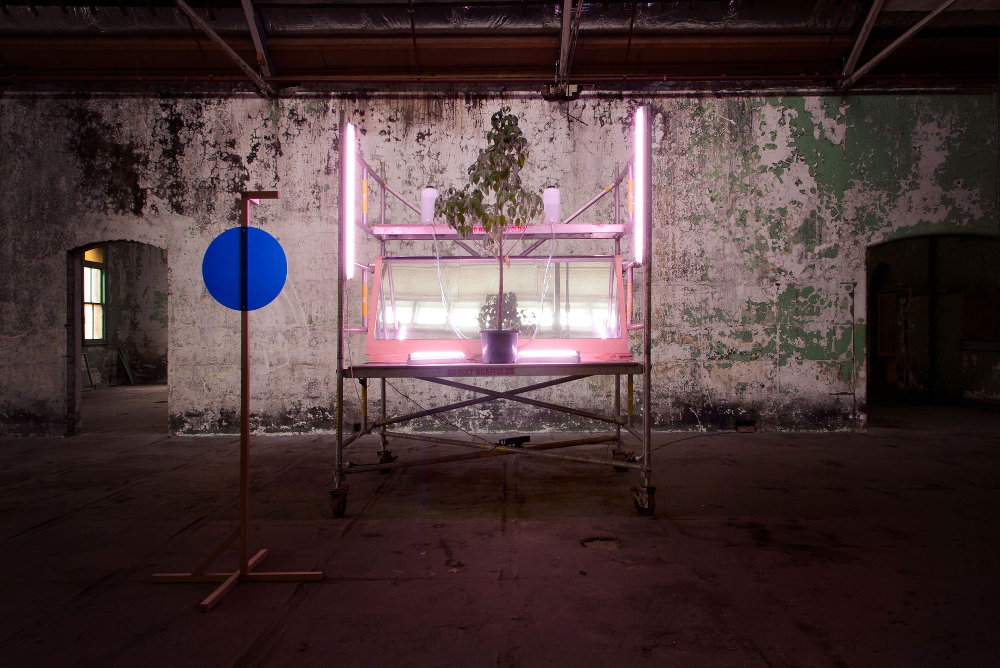

Archive / Exhibition
Archive 4:Jon Butt + Jessica Hood
- When
- 2013
- Venue
- Magdalen Laundries, Abbotsford Convent
- Artists
- Jon Butt + Jessica Hood
- Documentation
- Cameron Clarke
Project overview
PART 1
Proposition For Viewing
Jon Butt
PART 2
Portrait of a Specimen Tree
Jessica Hood

Part 1
Proposition For Viewing
Jon Butt
2 Channel Video (11:00 mins duration each channel)
Designed in the Naturalistic Style, the ornamental gardens were a place for quiet reflection. Today the gardens offer a far more informal space for a variety of users and are often experienced socially rather than absorbed over time. Proposition For Viewing, filmed over a month-long period during the height of spring, suggests a literal reading of the contemplative state, the video sequences present a determinedly slow pace reflecting the simple act of meditative observation. Installed within the dilapidated Sacred Heart and Industrial Laundry buildings, the two-screen installation renders the garden in a different context to allow new readings.
Part 2
Portrait of a Specimen Tree
Jessica Hood
(Tree installation on platform: Jon Butt – Jessica Hood)
Installation of living tree with 35mm slide projection.
Portrait of a Specimen Tree sets up a link between experiencing and recording the site of the Abbotsford Convent garden. A portrait series uses the garden and its activities as a backdrop, while images of plant specimens document the vegetation of the site in 2004 when the Abbotsford Convent Foundation were handed the title.
The works encourage a close up consideration of the leaves and flowers of the plant specimens, with the visitor then able to step outside the exhibition to access the backdrop of the portraits, the garden itself.
The central feature of Portrait of a Specimen Tree, a Vitex lucens, or Puriri, is kept alive in the space by means of water drip feeder, reflected sunlight and UV lights.
At the conclusion of the show this tree will be planted in the garden to stand as a living reference to this specific c3 Archive Project.
In this way Portrait of a Specimen Tree is made in response to the ongoing documentary nature of the c3 Archive Project. The maintenance of the tree within the garden site and beyond the project is the means by which the work itself becomes part of the continuity of the garden as an archived site.
Credits
Contributors / Supporters
Contributors:
Greg Phelan
Naomi Velaphi
Marg Allan
Fraser Faithful, archivist at The Good Shepherd
Supporters:
Arts Victoria
The Abbotsford Convent Foundation
The Good Shepherd